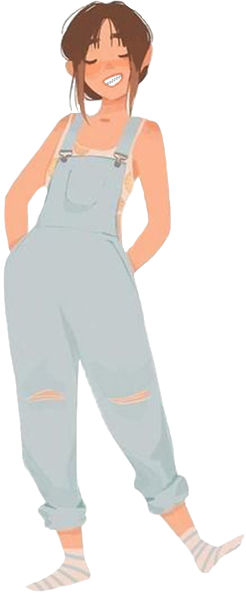
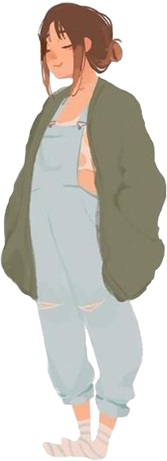

Esto soy
Solo: Amy


Una piba más que tuvo un pasado espantoso en un orfanato. Quise escapar con una amiga y no salió nada bien.
Ahora soy lo que llaman cabeza de pala en el Sabbat.
Erzsebeth me dijo que no sabía de qué clan soy, así que después fui con Rhen.
El tipo es un monstruo, un genio. Alto como él solo. Bueno, me voy de tema... Soy Nagaraja.
Como que los Nagaraja andamos en extinción o algo así. O sea, con mirar mis dientes te das cuenta que no somos
muchos o romperíamos eso que llaman La Mascarada. Así la llaman en la Camarilla.
Nosotros tenemos El silencio de la Sangre.
Nagaraja
Soy una Nagaraja, entonces tengo algunos de esos poderes de ver espíritus y usar energías entropicas para destruir cosas y eso, hasta puedo verlos en su mundo. Es súper flashero, como que todo está roto y oscuro ahí!
Los Nagaraja además pueden pegar duro, yo pego duro a pesar de que soy joven. Y me viene bien porque mis presas mi comida se mueve mucho a veces. ¿No lo conté? Es que los Nagaraja además de sangre tenemos que comer carne, por eso los dientitos :)
Sabbat
No sé cómo terminé acá, pero el Sabbat grita por la libertad y eso, lo cual nos trae muchos problemas. Es decir, la mayoría de nosotros somos de los que nos gustan los problemas, más cuando podemos solucionarlos de un bocado, el problema es que parece que llega el fin del mundo y no nos entra en la boca. Por ahora, igual. Por eso primero queremos pasarle por arriba a la Camarilla.
Camarilla
Ya hablé de la Camarilla dos... tres veces, ¿no? Son un grupo grande de vampiros también, pero se hacen pasar por humanos y juegan a qué todo está bien. Hacen como si no tuviéramos una Bestia dentro, y se dejan controlar por vampiros más viejos que quieren jugar con nosotros. ¡Por eso el Sabbat les va a partir todo!
Liberum Spiritae
Como somos gente de creencias fuertes, las Manadas además de un Ducti (líder) tienen un Sacerdote o Sacerdotisa. ¡Y resulta que terminé siendo yo en la mía! Es que puedo ver espíritus y eso, entonces quedaba bien, aunque no tenga que ver. Pero bueno, pega con el nombre.